Case Study: Booking App Design - Gardening
An app designed to help communities share yard space for gardening.
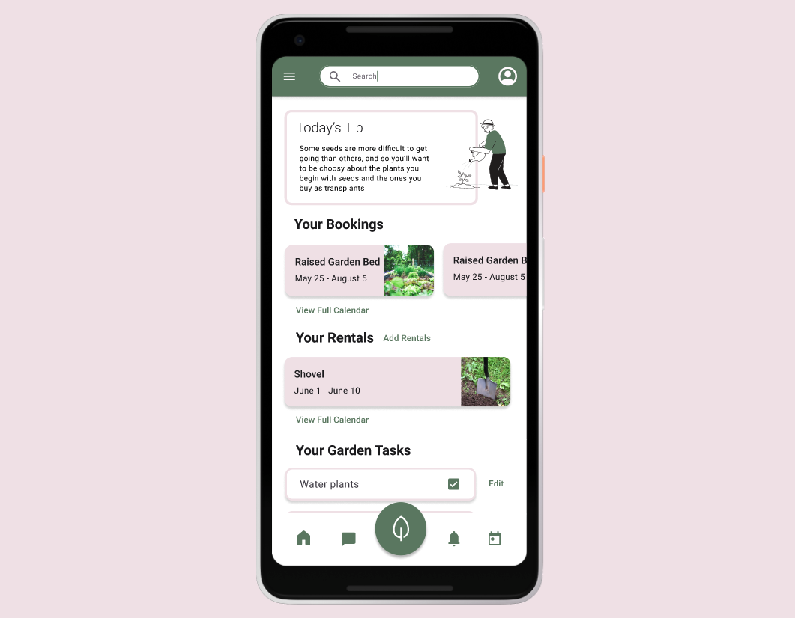This app idea is for a booking appp specifically for garden space, the features that this app will provide will allow the users to find and book, or post unused garden space for others to enjoy. Allowing the community to share and connect with common interests.
Role: UX Designer
School: Brigham Young University - Idaho
Date Completed: June 2022
The Goal:
Create a simple user face that will allow for community members to connect and share garden space and gardening knowledge.
Another main part of this case study was to learn about Material Design and use that in our designs. Using a Figma plugin, we were able to manipluate a set of componants based on material design. This would help the outcome be clean and more userfriendly.
Research and Personas:
Research is always important to understand what works in booking apps and what doesn't. I also created several personas to get a feel of who would be using the app and what their needs would be.
Features:
With these personas in mind, I made a list of what features should be included in this app in order to meet their needs. This helps me to know what to include in the app and how to organize the content. For this case study, I will be designing six main screens, they will be listed below.
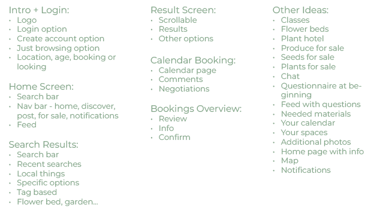Task Flow & User Flow:
These diagrams and path descriptions are a vital way to understand the users journey throughout the app. We start with the task flow which outlines what the user will want to accomplish while using the app. Next we create the user flow which will help us generate a route through the app to accomplish the said task. By anticipating how a user will maneuver in the app, we can predict any areas in the application where a user may get stuck or confused. Aiding the designer in creating a user friendly app.
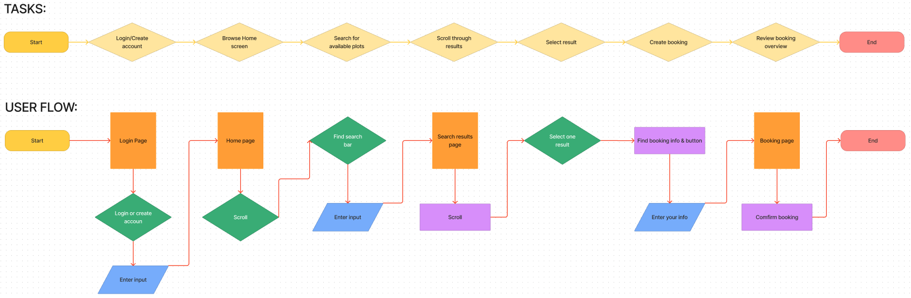Sketches
With these personas, features, task flow and user flow in mind, I begin drawing sketches on paper to get the feel of how the app can be designed. This will be the general outline and placement of the features. I will continue to revise and improve the application’s interface. These are the first sketches I created.
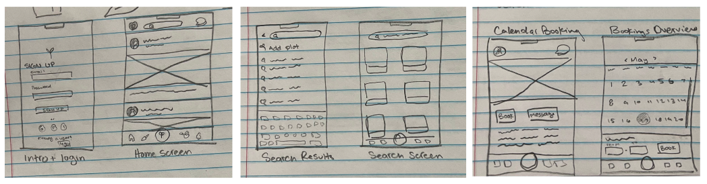Wireframes:
Taking what worked from my previous sketches, I created low fidelity wire frames using Figma. These wire frames would be more accurate as to the features I had set for the design, but it is still to see what works and what needs to be changed.
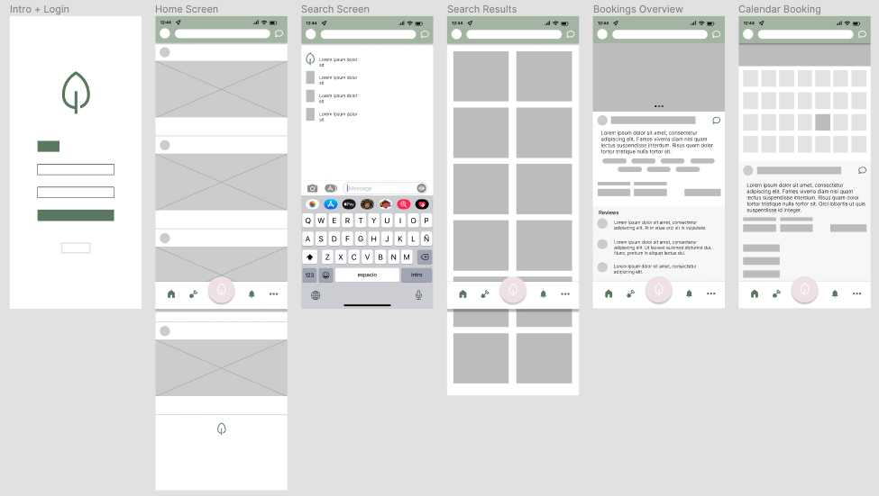Journey Map:
Similar to the personas, user flow and task flow, a journey map helps to further the design of the application and discover anywhere where there may be difficulties while using the app. While creating the journey map, you take one of the personas and walk through the process of using the application as if you were them. Going through the phases and actions as if you were in the mindset of the persona. You are trying to see what they would think during each phase.
Then you map out the emotional highs and lows of the personas experience. This will help you understand the process better and again, be more empathetic of the users. At the end you write down your insights. Below is part of the journey map I created based on the persona James.
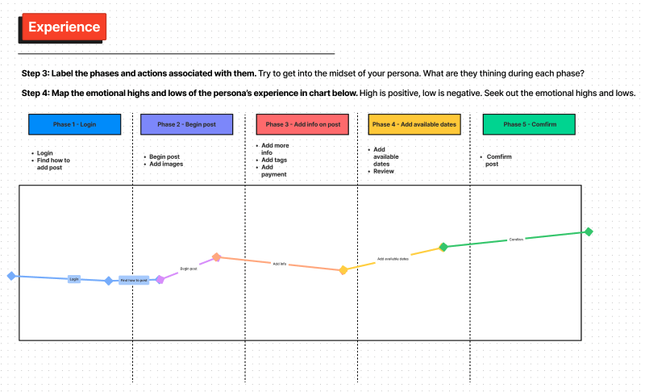Revise:
After creating the Journey Map, I can return to my wireframes to adjust or makes changes as I saw nesessary during the Journey Map because of some questions that arose. After creating the wireframe, I added more contant to the page to complete it.
After some critique, I decided to add to it and change some things. The feedback I got:
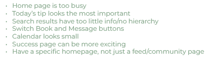After this feedback I went back to make the changes to make the app more userfriendly.
Revision Implemented:
Here is the revised version of the prototype.
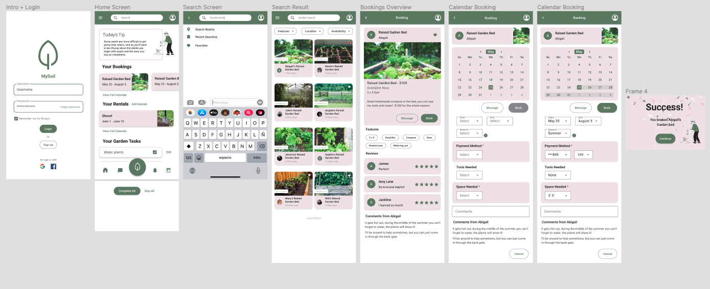User Flow Explained:
Below is the userflow walking through the prototype. This is an example of how a user would navigate the app if they were looking for and booking land for their garden.
The following images walk through the app with desciptions below.
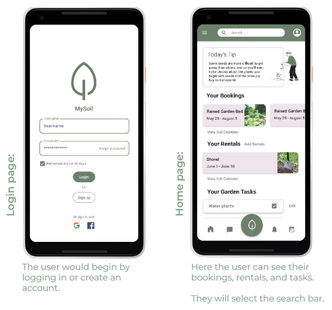 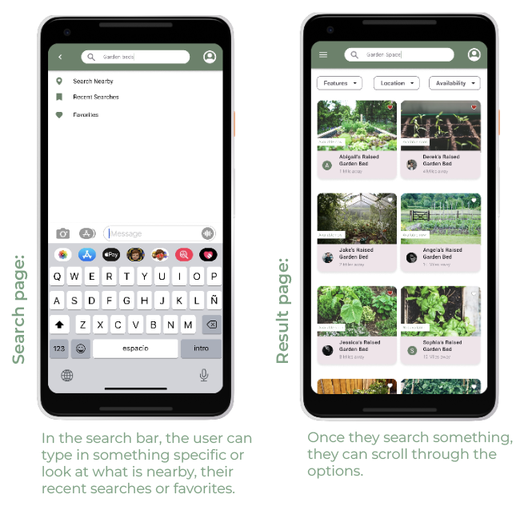 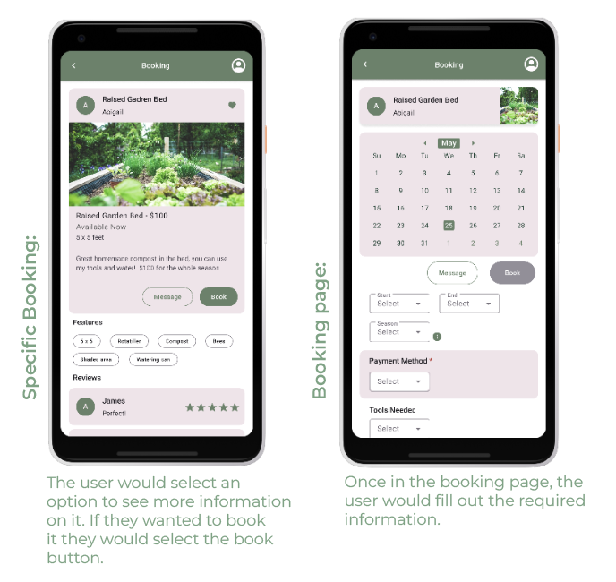 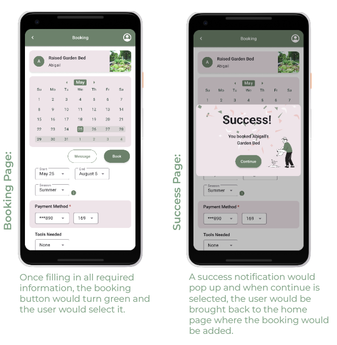What I Would Change:
If I were to recreate this design, I would conduct more research on how it would really work. With this knowledge, I would be able to create an even better design that would be ready to be developed. I love how simple the current interface is but I would want to add the small details that makes it feel real.